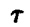
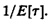

Notice that an exponential distribution is denoted by M, which stands for memoryless. If the interarrival times are exponentially distributed, for instance, with mean 1/λ, the expected time to the next arrival is always 1/λ regardless of the time since the last arrival (see Section 29.6 for a proof). Remembering the past history does not help. It is this unique memoryless property of exponential distribution that has led to its being called the memoryless distribution.
All of the preceding distributions assume individual arrivals or service. Bulk arrivals and bulk service, in which each arrival or service consists of a group of jobs,1 is denoted by a superscript. For example, bulk Poisson arrivals or service are denoted by M[x]. Here, x represents the group size, which is generally a random variable, and its distribution needs to be specified separately. Similarly, G[x] would represent a bulk arrival or service process with general intergroup times.
1In computer systems, each device is usually modeled as a service center with a queue of jobs to be serviced. The customers in these queues are jobs that move from one device to the next. At therefore use the terms jobs and customers interchangeably. Similarly, the terms device, service center, and queue are also used synonymously. The term buffer is used for waiting positions for the jobs in the system.
- Example 30.1 M/M/3/20/1500/FCFS denotes a single-queue system with the following parameters:
- 1. The time between successive arrivals is exponentially distributed.
- 2. The service times are exponentially distributed.
- 3. There are three servers.
- 4. The queue has buffers for 20 jobs. This consists of three places for jobs being served and 17 buffers for jobs waiting for service. After the number of jobs reaches 20, all arriving jobs are lost until the queue size decreases.
- 5. There is a total of 1500 jobs that can be serviced.
- 6. The service discipline is first come, first served.
Unless explicitly specified, the queues are defined as having infinite buffer capacity, infinite population size, and an FCFS service discipline. Ordinarily, only the first three of the six parameters are sufficient to indicate the type of queue. The queue, G/G/1/∞/∞/FCFS, for example, is denoted as G/G/1.
- Example 30.2 The term M[x]/M/1 denotes a single server queue with bulk Poisson arrivals and exponential service times, whereas M/G[x]/m denotes a queue with Poisson arrival process, bulk service with general service time distribution, and m servers.
30.2 RULES FOR ALL QUEUES
In this section we introduce some of the key variables used in the analysis of single queues and discuss relationships among them. Figure 30.2 shows the key variables used in queueing analysis. These are
- =interarrival time, that is, the time between two successive arrivals

FIGURE 30.2 Common random variables used in analyzing a queue.
- λ= Mean arrival rate =. In some systems, this can be a function of the state of the system. For example, it can depend upon the number of jobs already in the system.
- s = service time per job.
- µ= mean service rate per server, = 1/E[S]. Total service rate for m servers is mµ.
- n= number of jobs in the system. This is also called queue length.
Notice that this includes jobs currently receiving service as well as those waiting in the queue.
- nq=number of jobs waiting to receive service. This is always less than n, since it does not include the jobs currently receiving service.
- ns=number of jobs receiving service
- r=response time or the time in the system. This includes both the time waiting for service and the time receiving service.
- w=waiting time, that is, the time interval between arrival time and the instant the service begins
All of these variables except λ and µ are random variables. There are a number of relationships among these variables that apply to G/G/m queues. Since most of the queues that we discuss in this part are special cases of G/G/m, these apply to most of the queues that we will encounter.
- 1. Stability Condition: If the number of jobs in a system grows continuously and becomes infinite, the system is said to be unstable. For stability the mean arrival rate should be less than the mean service rate:
λ > mµ
Here, m is the number of servers. This stability condition does not apply to the finite population and the finite buffer systems. In the finite population systems, the queue length is always finite; the system can never become unstable. Also, the finite buffer systems are always stable since the arrivals are lost when the number of jobs in the system exceeds the number of buffers, that is, the system capacity.
- 2. Number in System versus Number in Queue: The number of jobs in the system is always equal to the sum of the number in the queue and the number receiving service:
n=nq + ns
- Notice that n, nq, and ns, are random variables. In particular, this equality leads to the following relationship among their means:
E[n]=E[nq] + E[ns]
- The mean number of jobs in the system is equal to the sum of the mean number in the queue and the mean number in service.
- Further, if the service rate of each server is independent of the number in the queue, we have
Cov(nq,ns) = 0
- and
Var[n] = Var[nq] + Var[ns]
- That is, the variance of the number of jobs in the system is equal to the sum of the variance of the number of jobs in the queue and the variance of the number receiving service.
- 3. Number versus Time: If jobs are not lost due to insufficient buffers, the mean number of jobs in a system is related to its mean response time as follows:
Mean number of jobs in system = arrival rate × mean response time
(30.1)
- Similarly
Mean number of jobs in queue = arrival rate × mean waiting time
(30.2)
- Equations (30.1) and (30.2) are known as Little’s law. We will give a general derivation of these in Section 30.3. In finite buffer systems, this law can be used provided we use effective arrival rate, that is, the rate of jobs actually entering the system and receiving service.
- 4. Time in System versus Time in Queue: The time spent by a job in a queueing system is, as shown in Figure 30.2, equal to the sum of the time waiting in the queue and the time receiving service:
r = w + s
- Notice that r, w, and s are random variables. In particular, this equality leads to the following relationship among their means:
E[r] = E[w] + E[s]
- That is, the mean response time is equal to the sum of the mean waiting time and the mean service time.
- If the service rate is independent of the number of jobs in the queue, we have
Cov(w,s) = 0
- and
Var[r] = Var[w] + Var[s]
- The variance of the response time is equal to the sum of the variances of the waiting time and that of the service time.
A few additional relationships are discussed later in Chapter 33. They apply to systems with single queues as well as to those with a network of several queues.
)
){kind=link}